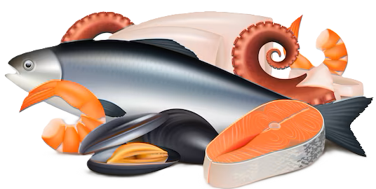

Pescado
Calidad: El término "calidad" en el pescado se refiere generalmente a su apariencia
estética, frescura y el grado de deterioro sufrido, pero también involucra aspectos de
seguridad como la ausencia de bacterias peligrosas, parásitos o compuestos químicos.
Los métodos para evaluar la calidad del pescado fresco se dividen en dos categorías:
sensorial e instrumental.
